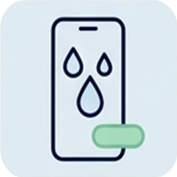

Un problème technique sur votre smartphone, tablette ou ordinateur ? Découvrez l'ensemble des interventions réalisées au sein de notre atelier.
Apple iPhone, Samsung Galaxy, Xiaomi, Huawei, Google Pixel, Oppo, Sony Xperia... Nous intervenons sur l'ensemble des modèles du marché.
Remplacement du bloc écran complet (LCD ou OLED haute fidélité). Idéal en cas de vitre brisée, tactile qui ne répond plus, lignes de couleurs ou écran tout noir.
Installation d'une batterie neuve haute capacité pour retrouver l'autonomie d'origine. Recommandé dès que la santé de batterie descend sous 80% ou que le téléphone s'éteint brutalement.
Remplacement de la prise de charge quand votre câble flotte, ne charge plus qu'en diagonale ou que le port est endommagé. Nettoyage préliminaire inclus.
Photos floues, capteur qui tremble ou vitre de protection fissurée à l'arrière ? Remplacement de la lentille ou du module caméra complet.
Vous n'entendez plus vos correspondants ou vos interlocuteurs ne vous entendent pas ? Grésillements en vidéo ? Remplacement du haut-parleur d'écoute et micros.
Dos en verre brisé, châssis tordu suite à un choc ou boutons de volume bloqués. Remise en état esthétique complète de la coque de votre téléphone.
iPad Pro, iPad Air, iPad Mini, Galaxy Tab... Un grand écran demande une grande précision d'assemblage.
Remplacement de la vitre tactile ou du bloc écran complet avec collage étanche sous presse. Rendu visuel d'origine et réactivité optimale du stylet.
Votre tablette ne s'allume plus sans câble branché ou s'éteint subitement à 40% ? Remplacement par une batterie haute densité neuve garantie.
Réparation ou microsoudure du port Lightning ou USB-C endommagé par des manipulations répétées ou l'insertion forcée d'un câble.
Prolongez la vie de votre ordinateur plutôt que d'en racheter un. Des interventions ciblées pour retrouver une machine réactive.
Le meilleur investissement pour booster un PC lent ! Remplacement de l'ancien disque mécanique par un SSD moderne : démarrage en 15 secondes garanti et transfert total de vos fichiers.
Votre PC chauffe, souffle bruyamment ou s'arrête en pleine tâche ? Dépoussiérage intégral du circuit de refroidissement et renouvellement de la pâte thermique haute performance.
Dalle fissurée, lignes horizontales ou absence de rétroéclairage sur PC portable toutes marques (Asus, Acer, HP, Lenovo, Dell). Remplacement de la dalle par un modèle identique.
Publicités intempestives, fenêtres étranges, blocage Windows. Nettoyage complet des logiciels malveillants, sécurisation et optimisation de la vitesse de navigation.
Windows plante, boucle sur un écran bleu ? Réinstallation complète d'un système propre et à jour tout en conservant précieusement l'intégralité de vos photos et documents.
Touches arrachées, liquide renversé sur le clavier, ou embout d'alimentation secteur dessoudé. Remplacement des pièces matérielles défectueuses.

L'eau et les circuits imprimés ne font pas bon ménage : chaque heure compte pour éviter l'oxydation irréversible.
Quelques réponses aux questions les plus posées par nos clients à Vitré.
Non ! Vous pouvez venir directement en boutique au 26 Rue de la Poterie à Vitré sans rendez-vous. Si la pièce est en stock (ce qui est le cas pour la plupart des modèles populaires), la réparation est réalisée directement sous vos yeux ou pendant que vous faites une course au centre-ville.
Dans 99% des interventions matérielles (changement d'écran, batterie, connecteur), vos données restent intactes et ne sont aucunement touchées. Nous ne réinitialisons jamais un appareil sans votre accord explicite.
Oui ! Toutes les pièces détachées installées bénéficient d'une garantie légale sur le bon fonctionnement de la pièce et de la main d'œuvre. Nous privilégions toujours des composants de haute qualité certifiés.
Pour la plupart des modèles de téléphones (iPhone, Samsung, Xiaomi), l'intervention dure en moyenne 30 à 45 minutes. Vous déposez votre appareil et pouvez le récupérer peu de temps après testé et prêt à l'emploi.